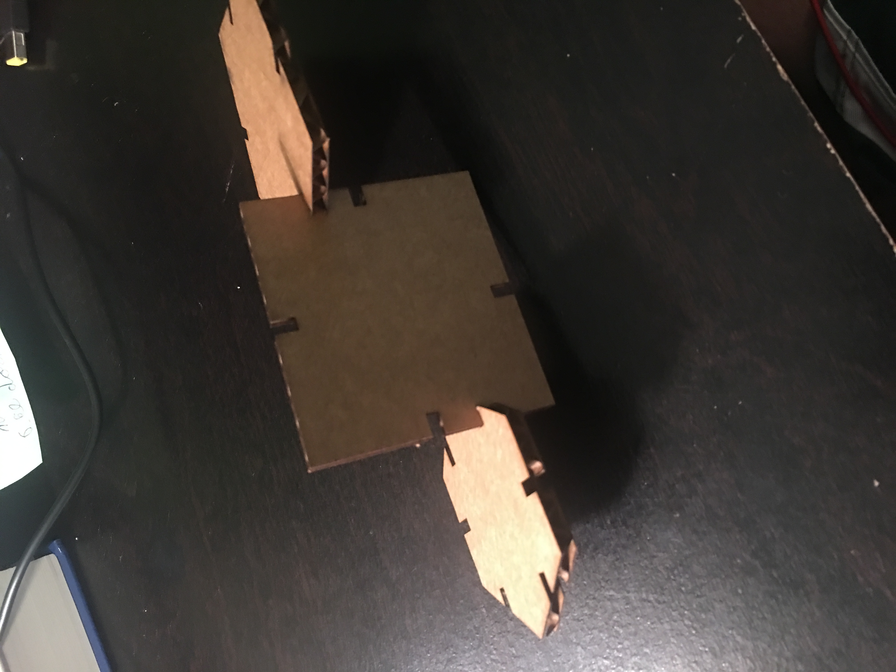
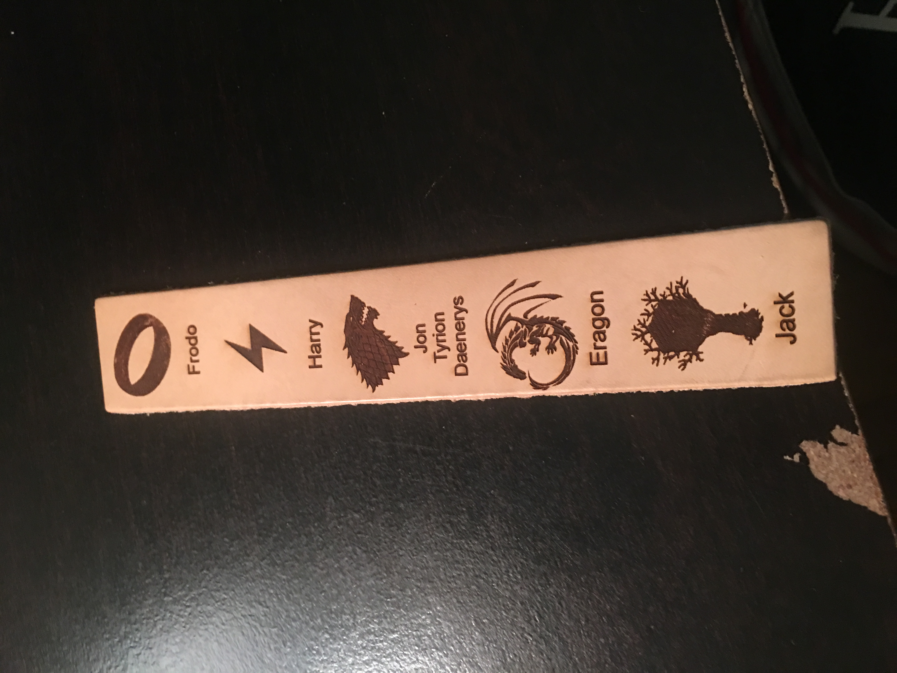
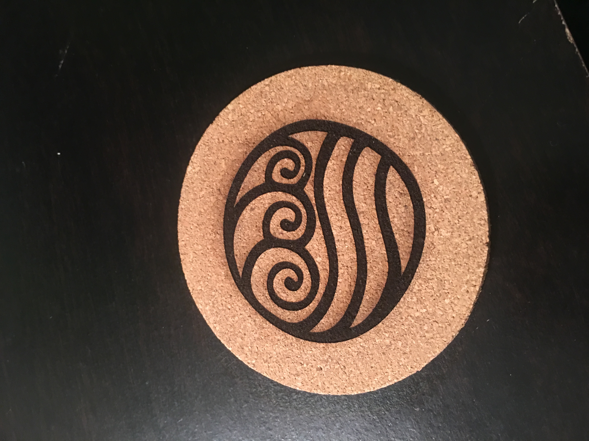

I had to create a box for this project, so I decided to make something to hold my ticket stubs in after I've seen movies. Holding up pretty well.
For my next trick: a set of pieces that, when fitted together, don't fall apart!
And then I had a few options and had to pick two. First: a bookmark with some of my favorite fantasy protagonists, listed as follows: Frodo Baggins from Lord of the Rings; Harry Potter from Harry Potter; Jon Snow, Tyrion Lannister, and Daenerys Targaryen from A Song of Ice and Fire; Eragon from the Inheritance cycle; and finally, Jack from The Magic Treehouse.
And finally, for my other option, a coaster for drinks bearing the symbol of water from Avatar: The Last Airbender.